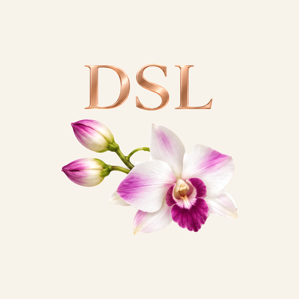
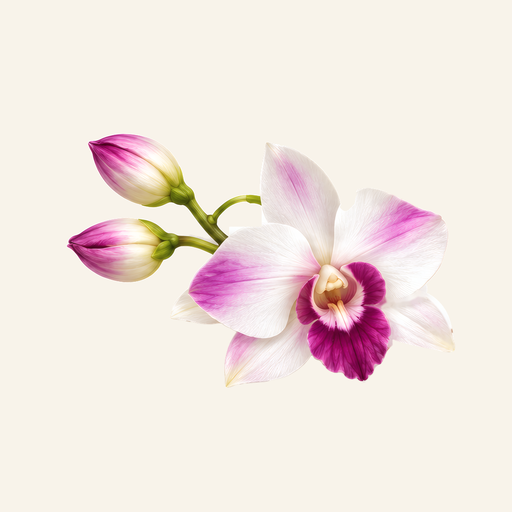
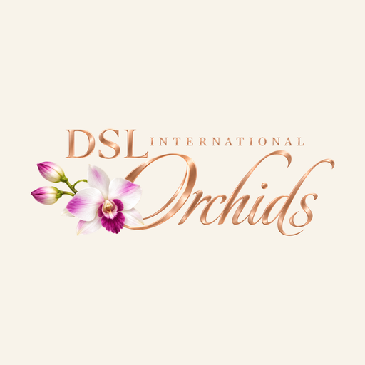
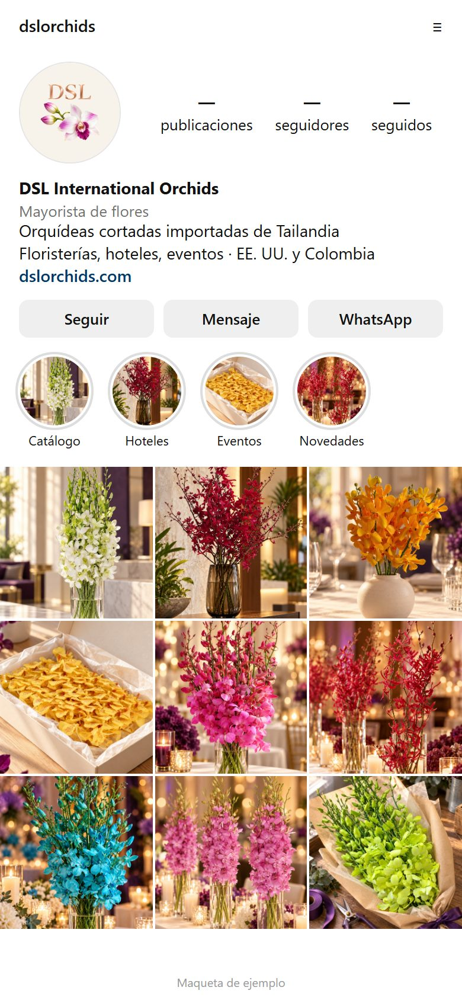
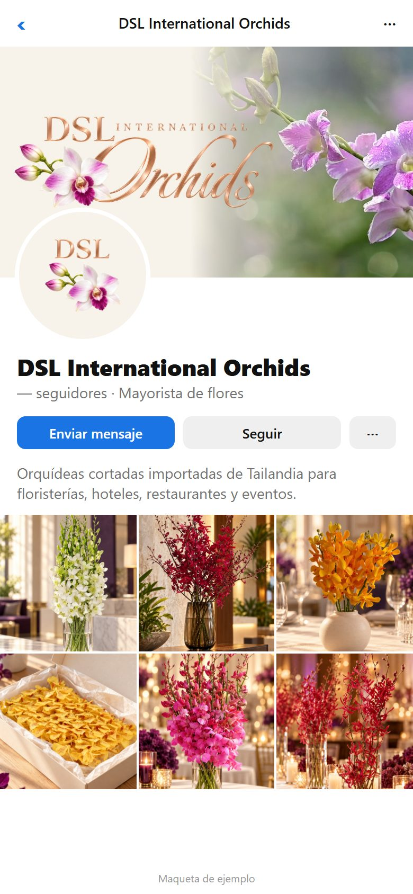
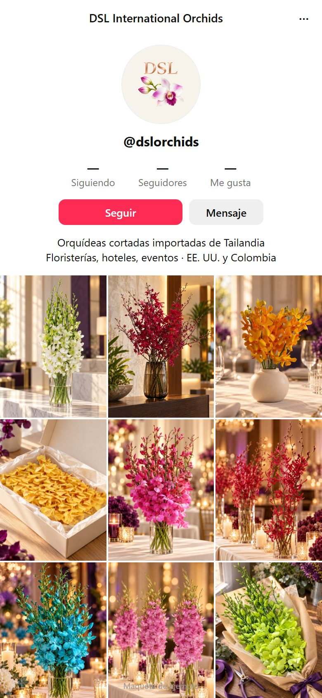
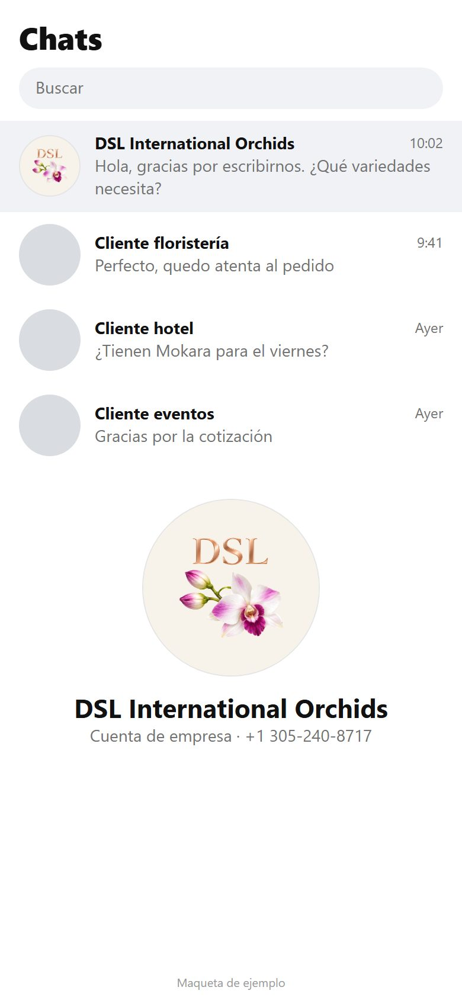
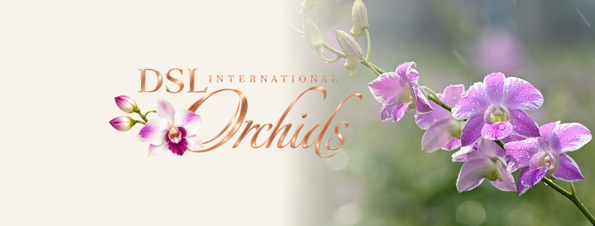

Flor + DSL, claro

56 px32 px
Se reconoce la marca y combina con la página nueva, que es clara.
DSL International Orchids · Redes sociales
Instagram, Facebook, TikTok y WhatsApp muestran la foto de perfil en un círculo pequeño. El logo completo es muy ancho para ese espacio, así que armamos versiones compactas con las mismas piezas del logo aprobado: la orquídea y las letras DSL en oro rosa.
Cada una se ve en grande y en los tamaños reales de las apps: comentarios, chats y notificaciones.

Se reconoce la marca y combina con la página nueva, que es clara.
El oro rosa resalta más y se ve elegante; destaca en el modo oscuro de las apps.

La más limpia en tamaños pequeños, pero no dice el nombre.

En el círculo las letras quedan muy pequeñas y no se leen.
Elija una opción para cambiar las cuatro pantallas. Son maquetas de ejemplo: las cifras van con guion y la descripción del perfil es un texto de muestra.




Facebook es la única de las cuatro con imagen de portada. En celular solo se ve la parte del centro (la línea punteada), por eso el logo va ahí. Usa la misma foto de orquídea de la página web.

Las fotos de perfil se suben cuadradas (1080 × 1080 px); cada red las recorta en círculo sola.